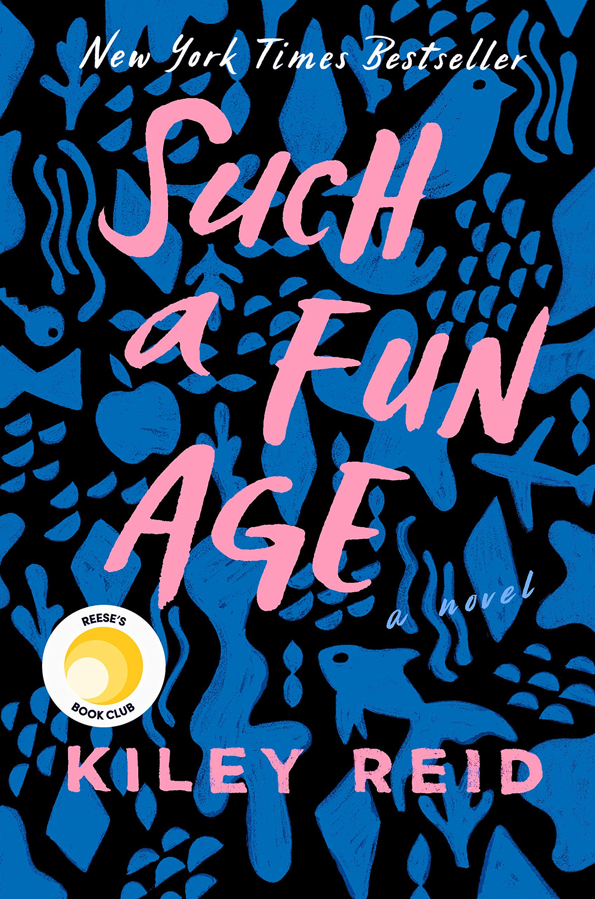
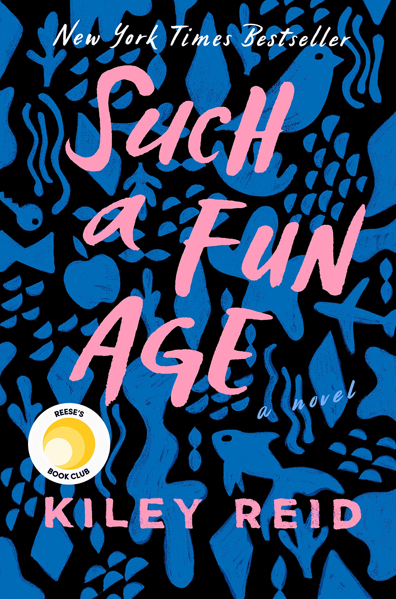
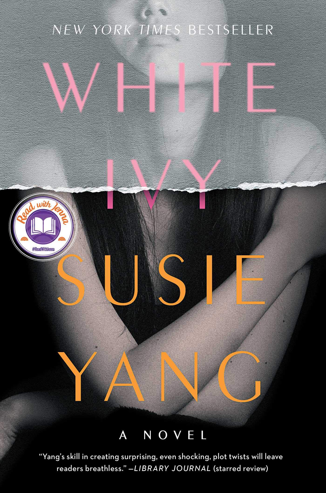
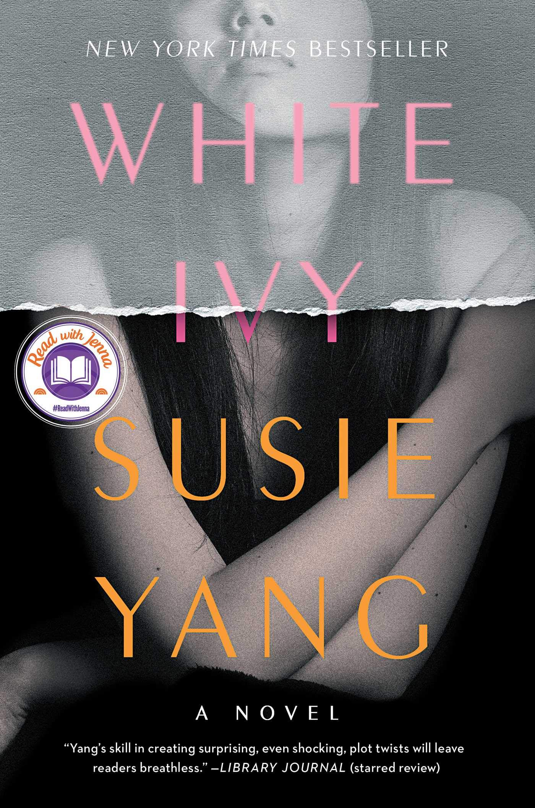

As an avid reader, I've read a lot of books over the years, but some books
really stand out as uniquely interesting, intruiging, or just comforting reads.
Checkout some of my favorite books below!
 "Born to survivalists in the mountains of Idaho, Tara Westover was seventeen the first time she set foot in a classroom. Her family was so isolated from mainstream society that there was no one to ensure the children received an education, and no one to intervene when one of Tara’s older brothers became violent. When another brother got himself into college, Tara decided to try a new kind of life. Her quest for knowledge transformed her, taking her over oceans and across continents, to Harvard and to Cambridge University. Only then would she wonder if she’d traveled too far, if there was still a way home."
"Author Alexis Daria brings readers an unforgettable, hilarious rom-com set in the drama-filled world of telenovelas"
"Born to survivalists in the mountains of Idaho, Tara Westover was seventeen the first time she set foot in a classroom. Her family was so isolated from mainstream society that there was no one to ensure the children received an education, and no one to intervene when one of Tara’s older brothers became violent. When another brother got himself into college, Tara decided to try a new kind of life. Her quest for knowledge transformed her, taking her over oceans and across continents, to Harvard and to Cambridge University. Only then would she wonder if she’d traveled too far, if there was still a way home."
"Author Alexis Daria brings readers an unforgettable, hilarious rom-com set in the drama-filled world of telenovelas"
 "A deeply personal work about identity and belonging in a nation coming apart at the seams, Homeland Elegies blends fact and fiction to tell an epic story of longing and dispossession in the world that 9/11 made. Part family drama, part social essay, part picaresque novel, at its heart it is the story of a father, a son, and the country they both call home."
"A deeply personal work about identity and belonging in a nation coming apart at the seams, Homeland Elegies blends fact and fiction to tell an epic story of longing and dispossession in the world that 9/11 made. Part family drama, part social essay, part picaresque novel, at its heart it is the story of a father, a son, and the country they both call home."
 "The Namesake takes the Ganguli family from their tradition-bound life in Calcutta through their fraught transformation into Americans. On the heels of their arranged wedding, Ashoke and Ashima Ganguli settle together in Cambridge, Massachusetts. An engineer by training, Ashoke adapts far less warily than his wife, who resists all things American and pines for her family. When their son is born, the task of naming him betrays the vexed results of bringing old ways to the new world. Named for a Russian writer by his Indian parents in memory of a catastrophe years before, Gogol Ganguli knows only that he suffers the burden of his heritage as well as his odd, antic name."
"The Namesake takes the Ganguli family from their tradition-bound life in Calcutta through their fraught transformation into Americans. On the heels of their arranged wedding, Ashoke and Ashima Ganguli settle together in Cambridge, Massachusetts. An engineer by training, Ashoke adapts far less warily than his wife, who resists all things American and pines for her family. When their son is born, the task of naming him betrays the vexed results of bringing old ways to the new world. Named for a Russian writer by his Indian parents in memory of a catastrophe years before, Gogol Ganguli knows only that he suffers the burden of his heritage as well as his odd, antic name."
 "The Silent Patient is a shocking psychological thriller of a woman's act of violence against her husband--and of the therapist obsessed with uncovering her motive."

"A striking and surprising debut novel from an exhilarating new voice, Such a Fun Age is a page-turning and big-hearted story about race and privilege, set around a young black babysitter, her well-intentioned employer, and a surprising connection that threatens to undo them both."
"The Silent Patient is a shocking psychological thriller of a woman's act of violence against her husband--and of the therapist obsessed with uncovering her motive."

"A striking and surprising debut novel from an exhilarating new voice, Such a Fun Age is a page-turning and big-hearted story about race and privilege, set around a young black babysitter, her well-intentioned employer, and a surprising connection that threatens to undo them both."
 "Lakshmi Shastri has spent years carving out a life for herself as a henna artist after fleeing her abusive husband and backward rural village for the Rajasthan capital. Well-versed in apothecary and the miraculous properties of herbs, her services (the effects of which are far more than just aesthetic) are highly sought after by upper-caste women, and Lakshmi’s success brings her within inches from her, and her country’s, ultimate goal: total independence. That is, until the past she has so desperately tried to run from comes knocking at her door..."
"Lakshmi Shastri has spent years carving out a life for herself as a henna artist after fleeing her abusive husband and backward rural village for the Rajasthan capital. Well-versed in apothecary and the miraculous properties of herbs, her services (the effects of which are far more than just aesthetic) are highly sought after by upper-caste women, and Lakshmi’s success brings her within inches from her, and her country’s, ultimate goal: total independence. That is, until the past she has so desperately tried to run from comes knocking at her door..."
 "A beautiful and distinguished family. A private island. A brilliant, damaged girl; a passionate, political boy. A group of four friends--the Liars--whose friendship turns destructive. A revolution. An accident. A secret. Lies upon lies. True love. The truth."

"A dazzling debut novel about a young woman's dark obsession with her privileged classmate and the lengths she'll go to win his love"
"A beautiful and distinguished family. A private island. A brilliant, damaged girl; a passionate, political boy. A group of four friends--the Liars--whose friendship turns destructive. A revolution. An accident. A secret. Lies upon lies. True love. The truth."

"A dazzling debut novel about a young woman's dark obsession with her privileged classmate and the lengths she'll go to win his love"